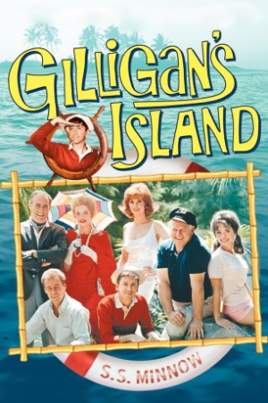
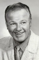

Country:United States, 25 hours
Spoken languages:English
Genres:Comedy, Family
Director(s):
Writer(s):
Video Codec:Unknown
Number: 2301


Certification:TV-G
Storyline:
The slapstick adventures of hapless Gilligan, long-suffering Skipper and their gang of mismatched castaways, all stranded on an uncharted desert isle after their tiny ship hit stormy weather.
Cast: 
Medium: Original DVD,
Loaned: No
Aspect ratio: Unknown